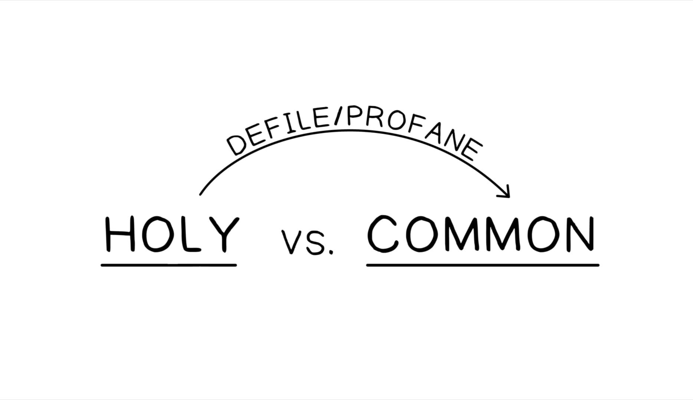
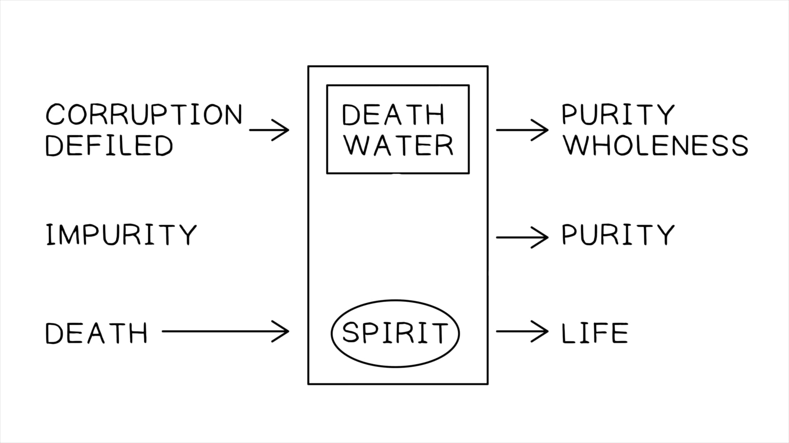

Este é um recontar da história da queda de Israel no exílio, mas da perspectiva de Yahweh e destacando o efeito que o exílio de Israel teve sobre a sua reputação entre as nações. O “santo nome” de Yahweh e a sua reputação foram “definidos” pela apostasia e exílio de Israel (Ez 36:20-21). O destino das nações era popularmente ligado ao destino da sua divindade nacional (ver a mesma lógica dos lábios de um comandante assírio em 2 Rs 18:33-35). O exílio de Israel significava que Yahweh era percebido como meramente um deus tribal que perdeu para Marduk e não pôde defender o seu povo (lembre do apelo de Moisés à mesma lógica em Êx 32:12; Nm 14:16).This is a retelling of the story of Israel’s fall into exile, but from Yahweh’s perspective and highlighting the effect Israel’s exile had on his reputation among the nations. Yahweh’s “holy name” and reputation was “defiled” by Israel’s apostasy and exile (Ezek. 36:20-21). The fate of nations was popularly linked to the fate of their national deity (see the same logic from the lips of an Assyrian commander in 2 Kgs. 18:33-35). Israel’s exile meant Yahweh was perceived as merely a tribal god who lost to Marduk and couldn’t defend his people (remember Moses’ appeal to the same logic in Exod. 32:12; Num. 14:16).
Yahweh restaurará Israel para “santificar” o seu nome (Ez 36:22-24). A restauração do exílio não dependerá da qualidade do arrependimento de Israel. Em vez disso, será puramente impulsionada pelo desejo de Yahweh de ser conhecido verdadeiramente entre as nações como o Deus criador e redentor de todas as nações (note a alusão de Jesus a esta linha na oração do Senhor em Mt 6:9).Yahweh will restore Israel to “hallow” his name (Ezek. 36:22-24). Restoration from exile will not depend on the quality of Israel’s repentance. Rather, it will be purely driven by Yahweh’s desire to be known truly among the nations as the creator and redeemer God of all nations (note Jesus’ allusion to this line in the Lord’s prayer in Matt. 6:9).
A restauração é uma resposta divina multifacetada ao destino de Israel (temas extraídos de Dt 30).The restoration is a multifaceted divine response to Israel’s fate (themes drawn from Deut. 30).
Ezequiel 36:24: restauração à terra prometida. Ezequiel 36:25: purificação cerimonial da impureza moral (emprestando linguagem de Nm 19, a cerimônia da novilha vermelha).Ezekiel 36:24: restoration to the promised land. Ezekiel 36:25: ceremonial cleansing from moral impurity (borrowing language from Num. 19, the ceremony of the red heifer).
Em Ezequiel 36:26-27, Deus diz que dará ao seu povo um novo coração e espírito. “Coração” (heb. lev) é o centro da vontade e emoção, e “espírito” (heb. ruakh) é a energia de vida animadora, que então é qualificada como “o meu Espírito em vós” que habilitará Israel a obedecer aos termos da aliança (de Lv 26:3; o tema aqui é inteiramente extraído de Dt 30:1-10 e explorado depois por Paulo em Rm 7-8).In Ezekiel 36:26-27, God says he will give his people a new heart and spirit. “Heart” (Heb. lev) is the center of will and emotion, and “spirit” (Heb. ruakh) is the animating life energy, which is then qualified as “my Spirit in you” which will enable Israel to obey the terms of the covenant (from Lev. 26:3; the theme here is entirely drawn from Deut. 30:1-10 and explored later by Paul in Rom. 7-8).
Ezequiel expressa um tema que ecoa em outra literatura do período do exílio.Ezekiel expresses a theme that echoes in other literature from the period of exile.
“Deus não mais apostará com Israel como fez nos tempos antigos, e Israel se rebelou contra ele; no futuro—nenhuma mais experimentos! Deus porá o seu espírito neles, ele alterará os seus corações (as suas mentes) e tornará impossível para eles serem outra coisa senão obedientes aos seus estatutos e mandamentos. A declaração abandona toda a esperança de que Israel, na sua condição presente, possa alcançar os ideais da relação de aliança originalmente pretendidos por Yahweh. O status quo só pode ser alterado por intervenção divina direta.”“God will no longer gamble with Israel as he did in old times, and Israel rebelled against him; in the future—no more experiments! God will put his spirit into them, he will alter their hearts (their minds) and make it impossible for them to be anything but obedient to his rules and his commandments. The declaration abandons all hope that Israel, in her present condition, can achieve the ideals of covenant relationship originally intended by Yahweh. The status quo can be altered only by direct divine intervention.”
Greenberg, Moshe (1995). “Three Conceptions of Torah in the Hebrew Bible.” Studies in the Bible and Jewish Thought. Jewish Publication Society.Greenberg, Moshe (1995). “Three Conceptions of Torah in the Hebrew Bible.” Studies in the Bible and Jewish Thought. Jewish Publication Society.
Embora Yahweh tenha removido a desgraça pública de Israel entre as nações (36:15 heb. kelimmah = desonra pública), Israel antes do exílio era incapaz de experimentar vergonha-culpa pela sua infidelidade à aliança (para mais sobre esse motivo ver Jr 3:3, 6:15, 8:12; heb. bosh e qut, mesmo que usado em 36:31-32). Paradoxalmente, a salvação de Yahweh instilará uma consciência moral adequada que pode sentir culpa saudável pelo erro (semelhante à autoconsciência de Paulo em 1 Tm 1:15).While Yahweh has removed the public disgrace of Israel among the nations (36:15 Heb. kelimmah = public dishonor), Israel before the exile was unable to experience guilt-shame for its covenant faithlessness (for more on this motif see Jer. 3:3, 6:15, 8:12; Heb. bosh and qut, same as used in 36:31-32). Paradoxically, Yahweh’s salvation will instill a proper moral awareness that can feel healthy guilt for wrongdoing (similar to Paul’s self-awareness in 1 Tim. 1:15).
Os exilados retornarão, reedificarão e restaurarão a terra a condições como o Éden, e tudo para o propósito de as nações prestarem atenção e reconhecerem Yahweh (Ez 36:33-38).The exiles will return, rebuild, and restore the land to Eden-like conditions, and all for the purpose of the nations paying attention and acknowledging Yahweh (Ezek. 36:33-38).


Como Deus planeja restaurar a reputação do seu nome entre as nações?How does God plan to restore the reputation of his name among the nations?